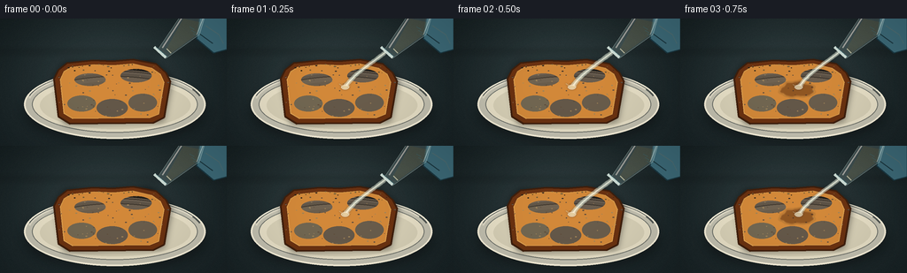
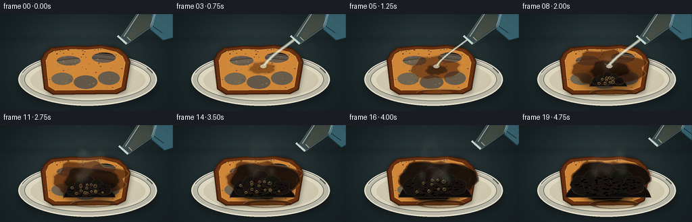
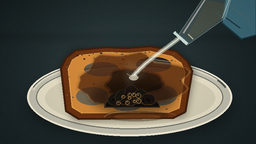
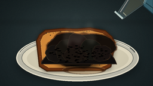

CODING AGENTS AS PIXEL WORLD MODELS
traex/GPT-5.6-Sol · material_0038
点击播放 · 原生 RGB 像素
逐轮保存的候选
回放视频、检查图与代码变化。
每份候选均可单独播放。实际图片检查记录在下方工具轨迹中。
候选 01播放与检查图
点击播放 · 原生 RGB 像素


展开代码变化
--- 上一保存版本
+++ 本次保存版本
@@ -0,0 +1,316 @@
+from pathlib import Path
+import math
+import numpy as np
+from PIL import Image, ImageDraw, ImageFilter
+import artifact_io
+
+# Procedural, deterministic tabletop macro-video.
+W, H, N = 256, 144, 20
+S = 3
+WW, HH = W*S, H*S
+rng = np.random.default_rng(38017)
+
+def sc(v):
+ if isinstance(v, (tuple, list)):
+ return tuple(int(round(x*S)) for x in v)
+ return int(round(v*S))
+
+def rgba_layer():
+ return Image.new("RGBA", (WW, HH), (0,0,0,0))
+
+def add_poly(im, pts, fill, outline=None, width=1):
+ d=ImageDraw.Draw(im)
+ d.polygon([sc(p) for p in pts], fill=fill)
+ if outline:
+ d.line([sc(p) for p in pts+[pts[0]]], fill=outline, width=sc(width), joint="curve")
+
+def add_ellipse(im, box, fill, outline=None, width=1):
+ ImageDraw.Draw(im).ellipse(sc(box), fill=fill, outline=outline, width=sc(width) if outline else 1)
+
+def composite(base, over):
+ return Image.alpha_composite(base, over)
+
+def irregular_blob(cx, cy, rx, ry, seed, n=40, phase=0):
+ rr=np.random.default_rng(seed)
+ wob=rr.uniform(.83,1.14,n)
+ # low pass the random radial edge to keep it organic rather than spiky
+ wob=(np.roll(wob,1)+2*wob+np.roll(wob,-1))/4
+ pts=[]
+ for k in range(n):
+ a=2*math.pi*k/n
+ r=wob[k]*(1+.055*math.sin(3*a+phase)+.035*math.sin(7*a-phase))
+ pts.append((cx+rx*r*math.cos(a), cy+ry*r*math.sin(a)))
+ return pts
+
+def bench_base():
+ yy,xx=np.mgrid[0:HH,0:WW]
+ # cool dark laboratory bench with a soft overhead pool of light
+ radial=np.exp(-(((xx-WW*.48)/(WW*.60))**2+((yy-HH*.43)/(HH*.82))**2)*2.0)
+ arr=np.zeros((HH,WW,4),dtype=np.uint8)
+ arr[...,0]=np.clip(19+23*radial+yy/HH*4,0,255)
+ arr[...,1]=np.clip(29+28*radial+yy/HH*5,0,255)
+ arr[...,2]=np.clip(32+29*radial+yy/HH*6,0,255)
+ arr[...,3]=255
+ # very fine stable bench grain
+ noise=rng.normal(0,2.0,(HH,WW,1))
+ arr[...,:3]=np.clip(arr[...,:3].astype(float)+noise,0,255).astype(np.uint8)
+ im=Image.fromarray(arr,"RGBA")
+ # back edge/seam and blurred reflections
+ lay=rgba_layer(); d=ImageDraw.Draw(lay)
+ d.line([(0,sc(37)),(WW,sc(37))], fill=(9,16,18,125), width=sc(2))
+ d.line([(0,sc(39)),(WW,sc(39))], fill=(85,103,102,28), width=sc(1))
+ d.ellipse(sc((35,63,230,137)), fill=(150,170,165,13))
+ return composite(im,lay.filter(ImageFilter.GaussianBlur(sc(3))))
+
+BASE=bench_base()
+
+# Fixed crumb speckles make the toast feel materially stable across frames.
+crumbs=[]
+for i in range(150):
+ # rejection sample in the bread's approximate interior
+ x=rng.uniform(66,190); y=rng.uniform(51,111)
+ # narrower toward top and lower perspective corners
+ if ((x-128)/68)**2 + ((y-81)/38)**2 < 1.05:
+ crumbs.append((x,y,rng.uniform(.25,1.0),rng.random()))
+
+# Fixed reaction pores and vents, revealed progressively.
+pores=[]
+for i in range(120):
+ ang=rng.uniform(0,2*math.pi); rad=math.sqrt(rng.random())
+ pores.append((ang,rad,rng.uniform(.45,2.2),rng.random()))
+
+# Smoke seeds (start phase, x offset, drift, size).
+smoke=[]
+for i in range(27):
+ smoke.append((rng.uniform(.28,.92), rng.uniform(-23,22), rng.uniform(-8,8), rng.uniform(3.5,9.5), rng.uniform(0,6.28)))
+
+def draw_plate(base):
+ # deep contact shadow
+ sh=rgba_layer(); add_ellipse(sh,(28,72,231,139),(0,0,0,125))
+ sh=sh.filter(ImageFilter.GaussianBlur(sc(8)))
+ base=composite(base,sh)
+ plate=rgba_layer(); d=ImageDraw.Draw(plate)
+ d.ellipse(sc((27,58,232,136)), fill=(189,193,184,255), outline=(238,239,226,255), width=sc(2))
+ d.ellipse(sc((36,65,223,129)), fill=(224,224,207,255), outline=(151,157,151,170), width=sc(1))
+ d.ellipse(sc((45,71,215,125)), fill=(208,208,190,255))
+ # ceramic highlights and lower rim
+ d.arc(sc((29,59,230,136)), 196, 344, fill=(112,119,116,150), width=sc(2))
+ d.arc(sc((31,60,228,132)), 190, 333, fill=(255,255,241,210), width=sc(2))
+ return composite(base,plate)
+
+def draw_toast(base, f, progress):
+ # Toast shadow, perspective trapezoid with a domed upper crust.
+ sh=rgba_layer(); add_poly(sh,[(62,66),(74,50),(170,47),(194,68),(184,116),(73,120)],(0,0,0,140))
+ sh=sh.filter(ImageFilter.GaussianBlur(sc(4)))
+ base=composite(base,sh)
+
+ toast=rgba_layer()
+ outer=[(61,68),(66,58),(76,50),(105,47),(127,48),(150,46),(176,51),(187,61),(192,71),(185,112),(173,118),(79,119),(66,111)]
+ add_poly(toast,outer,(103,50,18,255),outline=(61,31,13,255),width=2)
+ inner=[(68,69),(72,60),(80,55),(106,52),(128,53),(150,51),(171,56),(181,63),(185,72),(179,108),(169,112),(82,113),(72,107)]
+ add_poly(toast,inner,(204,137,60,255),outline=(232,171,82,220),width=1)
+
+ # toasted patches, clipped visually by placing only in interior
+ d=ImageDraw.Draw(toast)
+ patches=[(84,62,119,76),(136,57,171,72),(76,87,108,105),(145,85,177,105),(109,91,144,111)]
+ for j,b in enumerate(patches):
+ col=[(155,87,34,35),(111,58,25,43),(238,175,81,28)][j%3]
+ d.ellipse(sc(b),fill=col)
+ # crumb pores
+ for x,y,r,v in crumbs:
+ if v<.68:
+ col=(91,52,25,90) if v<.34 else (245,190,102,100)
+ d.ellipse(sc((x-r,y-r*.55,x+r,y+r*.55)),fill=col)
+ base=composite(base,toast)
+
+ if progress<=0: return base
+ # Wet acid soak: translucent amber-brown spreading outward before complete charring.
+ wet=rgba_layer()
+ spread=min(1, progress/0.42)
+ wrx=7+48*spread; wry=3+25*spread
+ wetpts=irregular_blob(132,80,wrx,wry,900,44,progress*2)
+ add_poly(wet,wetpts,(72,34,12,int(105+80*spread)))
+ # oily specular edge around the wetted area
+ ImageDraw.Draw(wet).line([sc(p) for p in wetpts+[wetpts[0]]],fill=(236,180,93,100),width=sc(1))
+ wet=wet.filter(ImageFilter.GaussianBlur(sc(.55)))
+ base=composite(base,wet)
+
+ # Black carbonized bread area, grows nonlinearly from impact.
+ char=max(0,(progress-.12)/.88)
+ if char>0:
+ ch=rgba_layer()
+ crx=5+52*min(1,char*1.2); cry=2+28*min(1,char*1.2)
+ cpts=irregular_blob(133,83,crx,cry,901,48,progress*3)
+ add_poly(ch,cpts,(18,14,10,int(125+120*char)))
+ # advancing brown-black ring
+ ImageDraw.Draw(ch).line([sc(p) for p in cpts+[cpts[0]]],fill=(72,37,18,170),width=sc(2))
+ base=composite(base,ch)
+ return base
+
+def draw_carbon_mound(base, progress, f):
+ foam=max(0,(progress-.30)/.70)
+ if foam<=0: return base
+ # Shadow around the expanding carbon mass.
+ sh=rgba_layer(); add_ellipse(sh,(91,79,175,116),(0,0,0,int(80+80*foam)))
+ sh=sh.filter(ImageFilter.GaussianBlur(sc(4)))
+ base=composite(base,sh)
+
+ lay=rgba_layer()
+ # A dehydrated black, porous mound rises rapidly in the timelapse.
+ width=18+45*foam
+ height=5+27*(foam**.72)
+ bottom=107
+ pts=[(132-width,bottom-5)]
+ n=36
+ for i in range(n+1):
+ a=math.pi-(math.pi*i/n)
+ x=132+width*math.cos(a)
+ y=bottom-height*math.sin(a)-3*math.sin(5*a+f*.18)*foam
+ pts.append((x,y))
+ pts += [(132+width,bottom),(132-width,bottom)]
+ add_poly(lay,pts,(14,13,12,255),outline=(48,38,29,255),width=1)
+ # folded lobes give a carbon-foam cauliflower silhouette
+ lobes=[(-.62,.10,.27,.49),(-.34,-.12,.29,.55),(0,-.27,.32,.62),(.32,-.09,.28,.55),(.61,.10,.25,.45),(-.12,.22,.32,.37)]
+ for j,(ox,oy,sx,sy) in enumerate(lobes):
+ cx=132+ox*width; cy=bottom-height*(.66-oy)
+ rx=max(3,width*sx); ry=max(2,height*sy)
+ col=(20+j%3*3,18+j%2*3,16,245)
+ add_poly(lay,irregular_blob(cx,cy,rx,ry,1100+j,22,f*.11),(col),outline=(59,48,37,165),width=.55)
+ # Pores appear as the mound grows. highlights on rims make them read as holes.
+ d=ImageDraw.Draw(lay)
+ count=int(15+75*foam)
+ for i,(ang,rad,sz,rv) in enumerate(pores[:count]):
+ x=132+math.cos(ang)*rad*width*.84
+ y=bottom-height*.52 + math.sin(ang)*rad*height*.46
+ # confine to domed silhouette
+ if y < bottom-1:
+ rr=sz*(.45+.7*foam)
+ d.ellipse(sc((x-rr,y-rr*.65,x+rr,y+rr*.65)),fill=(2,3,3,225))
+ if rr>1.2:
+ d.arc(sc((x-rr,y-rr*.65,x+rr,y+rr*.65)),190,340,fill=(87,69,48,150),width=sc(.45))
+ # glossy acid bubbles, strongest mid-reaction
+ bubble_strength=math.sin(min(1,foam)*math.pi)
+ for i in range(int(16*bubble_strength)):
+ ang,rad,sz,rv=pores[90+i]
+ x=132+math.cos(ang)*rad*width*.75
+ y=bottom-height*.55+math.sin(ang)*rad*height*.38
+ rr=1.0+sz*.9
+ d.ellipse(sc((x-rr,y-rr,x+rr,y+rr)),fill=(36,29,20,220),outline=(167,133,80,190),width=sc(.55))
+ d.ellipse(sc((x-rr*.35,y-rr*.55,x,y-rr*.15)),fill=(244,224,173,150))
+ return composite(base,lay)
+
+def draw_runoff(base, progress):
+ if progress<.25:return base
+ q=(progress-.25)/.75
+ lay=rgba_layer(); d=ImageDraw.Draw(lay)
+ # Acid-brown liquid collects at toast's front edge on the plate.
+ d.ellipse(sc((104,110,165+12*q,120+4*q)),fill=(64,37,17,int(90+75*q)))
+ d.ellipse(sc((114,114,157+13*q,118+5*q)),fill=(178,117,53,65))
+ d.arc(sc((104,110,177,124)),180,345,fill=(241,213,151,100),width=sc(1))
+ return composite(base,lay.filter(ImageFilter.GaussianBlur(sc(.45))))
+
+def draw_smoke(base, progress, f):
+ smoke_amt=max(0,(progress-.20)/.80)
+ if smoke_amt<=0:return base
+ lay=rgba_layer(); d=ImageDraw.Draw(lay)
+ t=f/19
+ for i,(start,ox,drift,size,ph) in enumerate(smoke):
+ age=(t-start)
+ if age<0: continue
+ # each puff rises and fades; repeated phase keeps flow continuous
+ life=min(1,age/.42)
+ x=132+ox*(.25+.75*smoke_amt)+drift*life+3*math.sin(ph+life*4)
+ y=84-life*(38+size*1.8)
+ rx=size*(.45+life*1.1); ry=size*(.8+life*1.7)
+ alpha=int(62*(1-life)*min(1,smoke_amt*2.2))
+ if alpha>1:
+ d.ellipse(sc((x-rx,y-ry,x+rx,y+ry)),fill=(176,181,174,alpha))
+ # thin tendrils from hot surface
+ for j in range(4):
+ x=113+j*13+3*math.sin(f*.4+j)
+ pts=[]
+ for k in range(8):
+ y=91-k*4.5
+ pts.append(sc((x+math.sin(k*.7+f*.35+j)*3,y)))
+ d.line(pts,fill=(209,209,195,int(18+25*smoke_amt)),width=sc(1.2))
+ lay=lay.filter(ImageFilter.GaussianBlur(sc(3.0)))
+ return composite(base,lay)
+
+def draw_pour_and_beaker(base, f):
+ # pouring interval; the beaker slowly withdraws after frame 10
+ pouring = 1 <= f <= 10
+ retract=max(0,(f-10)/9)
+ dx=18*retract; dy=-13*retract
+ # Clear, viscous stream is behind the glass vessel but in front of smoke.
+ if pouring:
+ stream=rgba_layer(); d=ImageDraw.Draw(stream)
+ pulse=.78+.22*math.sin(f*.85)
+ p0=(179+dx,38+dy); p1=(164,50); p2=(145,61); p3=(133+math.sin(f*.55),77)
+ curve=[]
+ for k in range(31):
+ u=k/30; a=(1-u)**3; b=3*(1-u)**2*u; c=3*(1-u)*u*u; e=u**3
+ curve.append(sc((a*p0[0]+b*p1[0]+c*p2[0]+e*p3[0],a*p0[1]+b*p1[1]+c*p2[1]+e*p3[1])))
+ d.line(curve,fill=(216,234,225,100),width=sc(5.2*pulse),joint="curve")
+ d.line(curve,fill=(246,255,245,190),width=sc(1.15),joint="curve")
+ # bright impact crown and splashes
+ d.ellipse(sc((129,75,138,80)),fill=(230,239,214,105),outline=(255,255,248,180),width=sc(.7))
+ for j in range(4):
+ x=133+(j-1.5)*4; y=78-abs(j-1.5)*2-math.sin(f+j)*1.3
+ d.line([sc((133,78)),sc((x,y))],fill=(231,239,220,120),width=sc(.8))
+ blur=stream.filter(ImageFilter.GaussianBlur(sc(1.1)))
+ base=composite(base,blur); base=composite(base,stream)
+
+ # glove/hand enters from upper right holding the tilted beaker
+ hand=rgba_layer()
+ add_poly(hand,[(226+dx,-5+dy),(256,-4),(256,35+dy),(241+dx,39+dy),(222+dx,23+dy)],(59,107,126,255),outline=(25,55,68,255),width=1.4)
+ # glove creases
+ hd=ImageDraw.Draw(hand)
+ hd.line([sc((232+dx,8+dy)),sc((247+dx,18+dy)),sc((252,28+dy))],fill=(111,162,176,150),width=sc(1))
+ hd.line([sc((225+dx,17+dy)),sc((240+dx,28+dy))],fill=(27,66,81,170),width=sc(1))
+ base=composite(base,hand)
+
+ # Angled transparent laboratory beaker; mouth points down-left.
+ glass=rgba_layer(); d=ImageDraw.Draw(glass)
+ body=[(178+dx,35+dy),(187+dx,45+dy),(225+dx,18+dy),(231+dx,-2+dy),(207+dx,-8+dy)]
+ d.polygon([sc(p) for p in body],fill=(172,212,218,52),outline=(219,245,245,190))
+ # pale clear acid volume and meniscus inside
+ acid=[(188+dx,34+dy),(193+dx,39+dy),(222+dx,18+dy),(226+dx,4+dy),(207+dx,0+dy)]
+ d.polygon([sc(p) for p in acid],fill=(220,226,184,55))
+ d.line([sc((188+dx,34+dy)),sc((193+dx,39+dy))],fill=(246,250,220,170),width=sc(1))
+ # thick elliptical lip and glass highlights
+ d.line([sc((174+dx,32+dy)),sc((187+dx,44+dy))],fill=(226,250,251,220),width=sc(3))
+ d.line([sc((176+dx,32+dy)),sc((189+dx,43+dy))],fill=(82,139,151,160),width=sc(.8))
+ d.line([sc((207+dx,-4+dy)),sc((183+dx,33+dy))],fill=(255,255,255,145),width=sc(1.2))
+ d.line([sc((229+dx,0+dy)),sc((222+dx,18+dy))],fill=(234,255,255,145),width=sc(1))
+ # simple volume tick marks
+ for j in range(3):
+ x=214+dx+j*2; y=9+dy+j*4
+ d.line([sc((x,y)),sc((x+5,y+3))],fill=(92,141,150,135),width=sc(.6))
+ return composite(base,glass)
+
+def frame(f):
+ im=BASE.copy()
+ im=draw_plate(im)
+ # Acid first lands around frame 2 and the timelapse reaction accelerates.
+ progress=max(0,(f-2)/17)
+ progress=progress**.78
+ im=draw_toast(im,f,progress)
+ im=draw_runoff(im,progress)
+ im=draw_carbon_mound(im,progress,f)
+ im=draw_smoke(im,progress,f)
+ im=draw_pour_and_beaker(im,f)
+
+ # Subtle lens vignette and warm reaction-area light.
+ arr=np.asarray(im.convert("RGB")).astype(np.float32)
+ yy,xx=np.mgrid[0:HH,0:WW]
+ vig=1-.17*np.clip(((xx-WW/2)/(WW*.68))**2+((yy-HH/2)/(HH*.82))**2,0,1)
+ arr*=vig[...,None]
+ # fixed cinematic grade
+ arr[...,0]*=1.035; arr[...,2]*=.96
+ arr=np.clip(arr,0,255).astype(np.uint8)
+ out=Image.fromarray(arr).resize((W,H),Image.Resampling.LANCZOS)
+ return np.asarray(out,dtype=np.uint8)
+
+frames=np.stack([frame(i) for i in range(N)])
+artifact_io.save(frames,Path(__file__).resolve().parent)
+print("saved",frames.shape,frames.dtype)
可观测工具轨迹
实际执行的命令与返回图片。
命令 1exit 0
/bin/bash -lc "cat prompt.txt && printf '\\n---RULES---\\n' && cat GENERATION_RULES.md && printf '\\n---SPEC---\\n' && cat task_spec.json"
命令 2exit 0
/bin/bash -lc "find . -maxdepth 2 -type f -printf '%p\\n' | sort && printf '\\nTOOLS\\n' && command -v ffmpeg || true && command -v python3 || true && command -v blender || true"
命令 3exit 0
/bin/bash -lc "sed -n '1,240p' artifact_io.py"
命令 4exit 0
/bin/bash -lc "cat > generate.py <<'PY'
from pathlib import Path
import math
import numpy as np
from PIL import Image, ImageDraw, ImageFilter
import artifact_io
# Procedural, deterministic tabletop macro-video.
W, H, N = 256, 144, 20
S = 3
WW, HH = W*S, H*S
rng = np.random.default_rng(38017)
def sc(v):
if isinstance(v, (tuple, list)):
return tuple(int(round(x*S)) for x in v)
return int(round(v*S))
def rgba_layer():
return Image.new(\"RGBA\", (WW, HH), (0,0,0,0))
def add_poly(im, pts, fill, outline=None, width=1):
d=ImageDraw.Draw(im)
d.polygon([sc(p) for p in pts], fill=fill)
if outline:
d.line([sc(p) for p in pts+[pts[0]]], fill=outline, width=sc(width), joint=\"curve\")
def add_ellipse(im, box, fill, outline=None, width=1):
ImageDraw.Draw(im).ellipse(sc(box), fill=fill, outline=outline, width=sc(width) if outline else 1)
def composite(base, over):
return Image.alpha_composite(base, over)
def irregular_blob(cx, cy, rx, ry, seed, n=40, phase=0):
rr=np.random.default_rng(seed)
wob=rr.uniform(.83,1.14,n)
# low pass the random radial edge to keep it organic rather than spiky
wob=(np.roll(wob,1)+2*wob+np.roll(wob,-1))/4
pts=[]
for k in range(n):
a=2*math.pi*k/n
r=wob[k]*(1+.055*math.sin(3*a+phase)+.035*math.sin(7*a-phase))
pts.append((cx+rx*r*math.cos(a), cy+ry*r*math.sin(a)))
return pts
def bench_base():
yy,xx=np.mgrid[0:HH,0:WW]
# cool dark laboratory bench with a soft overhead pool of light
radial=np.exp(-(((xx-WW*.48)/(WW*.60))**2+((yy-HH*.43)/(HH*.82))**2)*2.0)
arr=np.zeros((HH,WW,4),dtype=np.uint8)
arr[...,0]=np.clip(19+23*radial+yy/HH*4,0,255)
arr[...,1]=np.clip(29+28*radial+yy/HH*5,0,255)
arr[...,2]=np.clip(32+29*radial+yy/HH*6,0,255)
arr[...,3]=255
# very fine stable bench grain
noise=rng.normal(0,2.0,(HH,WW,1))
arr[...,:3]=np.clip(arr[...,:3].astype(float)+noise,0,255).astype(np.uint8)
im=Image.fromarray(arr,\"RGBA\")
# back edge/seam and blurred reflections
lay=rgba_layer(); d=ImageDraw.Draw(lay)
d.line([(0,sc(37)),(WW,sc(37))], fill=(9,16,18,125), width=sc(2))
d.line([(0,sc(39)),(WW,sc(39))], fill=(85,103,102,28), width=sc(1))
d.ellipse(sc((35,63,230,137)), fill=(150,170,165,13))
return composite(im,lay.filter(ImageFilter.GaussianBlur(sc(3))))
BASE=bench_base()
# Fixed crumb speckles make the toast feel materially stable across frames.
crumbs=[]
for i in range(150):
# rejection sample in the bread's approximate interior
x=rng.uniform(66,190); y=rng.uniform(51,111)
# narrower toward top and lower perspective corners
if ((x-128)/68)**2 + ((y-81)/38)**2 < 1.05:
crumbs.append((x,y,rng.uniform(.25,1.0),rng.random()))
# Fixed reaction pores and vents, revealed progressively.
pores=[]
for i in range(120):
ang=rng.uniform(0,2*math.pi); rad=math.sqrt(rng.random())
pores.append((ang,rad,rng.uniform(.45,2.2),rng.random()))
# Smoke seeds (start phase, x offset, drift, size).
smoke=[]
for i in range(27):
smoke.append((rng.uniform(.28,.92), rng.uniform(-23,22), rng.uniform(-8,8), rng.uniform(3.5,9.5), rng.uniform(0,6.28)))
def draw_plate(base):
# deep contact shadow
sh=rgba_layer(); add_ellipse(sh,(28,72,231,139),(0,0,0,125))
sh=sh.filter(ImageFilter.GaussianBlur(sc(8)))
base=composite(base,sh)
plate=rgba_layer(); d=ImageDraw.Draw(plate)
d.ellipse(sc((27,58,232,136)), fill=(189,193,184,255), outline=(238,239,226,255), width=sc(2))
d.ellipse(sc((36,65,223,129)), fill=(224,224,207,255), outline=(151,157,151,170), width=sc(1))
d.ellipse(sc((45,71,215,125)), fill=(208,208,190,255))
# ceramic highlights and lower rim
d.arc(sc((29,59,230,136)), 196, 344, fill=(112,119,116,150), width=sc(2))
d.arc(sc((31,60,228,132)), 190, 333, fill=(255,255,241,210), width=sc(2))
return composite(base,plate)
def draw_toast(base, f, progress):
# Toast shadow, perspective trapezoid with a domed upper crust.
sh=rgba_layer(); add_poly(sh,[(62,66),(74,50),(170,47),(194,68),(184,116),(73,120)],(0,0,0,140))
sh=sh.filter(ImageFilter.GaussianBlur(sc(4)))
base=composite(base,sh)
toast=rgba_layer()
outer=[(61,68),(66,58),(76,50),(105,47),(127,48),(150,46),(176,51),(187,61),(192,71),(185,112),(173,118),(79,119),(66,111)]
add_poly(toast,outer,(103,50,18,255),outline=(61,31,13,255),width=2)
inner=[(68,69),(72,60),(80,55),(106,52),(128,53),(150,51),(171,56),(181,63),(185,72),(179,108),(169,112),(82,113),(72,107)]
add_poly(toast,inner,(204,137,60,255),outline=(232,171,82,220),width=1)
# toasted patches, clipped visually by placing only in interior
d=ImageDraw.Draw(toast)
patches=[(84,62,119,76),(136,57,171,72),(76,87,108,105),(145,85,177,105),(109,91,144,111)]
for j,b in enumerate(patches):
col=[(155,87,34,35),(111,58,25,43),(238,175,81,28)][j%3]
d.ellipse(sc(b),fill=col)
# crumb pores
for x,y,r,v in crumbs:
if v<.68:
col=(91,52,25,90) if v<.34 else (245,190,102,100)
d.ellipse(sc((x-r,y-r*.55,x+r,y+r*.55)),fill=col)
base=composite(base,toast)
if progress<=0: return base
# Wet acid soak: translucent amber-brown spreading outward before complete charring.
wet=rgba_layer()
spread=min(1, progress/0.42)
wrx=7+48*spread; wry=3+25*spread
wetpts=irregular_blob(132,80,wrx,wry,900,44,progress*2)
add_poly(wet,wetpts,(72,34,12,int(105+80*spread)))
# oily specular edge around the wetted area
ImageDraw.Draw(wet).line([sc(p) for p in wetpts+[wetpts[0]]],fill=(236,180,93,100),width=sc(1))
wet=wet.filter(ImageFilter.GaussianBlur(sc(.55)))
base=composite(base,wet)
# Black carbonized bread area, grows nonlinearly from impact.
char=max(0,(progress-.12)/.88)
if char>0:
ch=rgba_layer()
crx=5+52*min(1,char*1.2); cry=2+28*min(1,char*1.2)
cpts=irregular_blob(133,83,crx,cry,901,48,progress*3)
add_poly(ch,cpts,(18,14,10,int(125+120*char)))
# advancing brown-black ring
ImageDraw.Draw(ch).line([sc(p) for p in cpts+[cpts[0]]],fill=(72,37,18,170),width=sc(2))
base=composite(base,ch)
return base
def draw_carbon_mound(base, progress, f):
foam=max(0,(progress-.30)/.70)
if foam<=0: return base
# Shadow around the expanding carbon mass.
sh=rgba_layer(); add_ellipse(sh,(91,79,175,116),(0,0,0,int(80+80*foam)))
sh=sh.filter(ImageFilter.GaussianBlur(sc(4)))
base=composite(base,sh)
lay=rgba_layer()
# A dehydrated black, porous mound rises rapidly in the timelapse.
width=18+45*foam
height=5+27*(foam**.72)
bottom=107
pts=[(132-width,bottom-5)]
n=36
for i in range(n+1):
a=math.pi-(math.pi*i/n)
x=132+width*math.cos(a)
y=bottom-height*math.sin(a)-3*math.sin(5*a+f*.18)*foam
pts.append((x,y))
pts += [(132+width,bottom),(132-width,bottom)]
add_poly(lay,pts,(14,13,12,255),outline=(48,38,29,255),width=1)
# folded lobes give a carbon-foam cauliflower silhouette
lobes=[(-.62,.10,.27,.49),(-.34,-.12,.29,.55),(0,-.27,.32,.62),(.32,-.09,.28,.55),(.61,.10,.25,.45),(-.12,.22,.32,.37)]
for j,(ox,oy,sx,sy) in enumerate(lobes):
cx=132+ox*width; cy=bottom-height*(.66-oy)
rx=max(3,width*sx); ry=max(2,height*sy)
col=(20+j%3*3,18+j%2*3,16,245)
add_poly(lay,irregular_blob(cx,cy,rx,ry,1100+j,22,f*.11),(col),outline=(59,48,37,165),width=.55)
# Pores appear as the mound grows. highlights on rims make them read as holes.
d=ImageDraw.Draw(lay)
count=int(15+75*foam)
for i,(ang,rad,sz,rv) in enumerate(pores[:count]):
x=132+math.cos(ang)*rad*width*.84
y=bottom-height*.52 + math.sin(ang)*rad*height*.46
# confine to domed silhouette
if y < bottom-1:
rr=sz*(.45+.7*foam)
d.ellipse(sc((x-rr,y-rr*.65,x+rr,y+rr*.65)),fill=(2,3,3,225))
if rr>1.2:
d.arc(sc((x-rr,y-rr*.65,x+rr,y+rr*.65)),190,340,fill=(87,69,48,150),width=sc(.45))
# glossy acid bubbles, strongest mid-reaction
bubble_strength=math.sin(min(1,foam)*math.pi)
for i in range(int(16*bubble_strength)):
ang,rad,sz,rv=pores[90+i]
x=132+math.cos(ang)*rad*width*.75
y=bottom-height*.55+math.sin(ang)*rad*height*.38
rr=1.0+sz*.9
d.ellipse(sc((x-rr,y-rr,x+rr,y+rr)),fill=(36,29,20,220),outline=(167,133,80,190),width=sc(.55))
d.ellipse(sc((x-rr*.35,y-rr*.55,x,y-rr*.15)),fill=(244,224,173,150))
return composite(base,lay)
def draw_runoff(base, progress):
if progress<.25:return base
q=(progress-.25)/.75
lay=rgba_layer(); d=ImageDraw.Draw(lay)
# Acid-brown liquid collects at toast's front edge on the plate.
d.ellipse(sc((104,110,165+12*q,120+4*q)),fill=(64,37,17,int(90+75*q)))
d.ellipse(sc((114,114,157+13*q,118+5*q)),fill=(178,117,53,65))
d.arc(sc((104,110,177,124)),180,345,fill=(241,213,151,100),width=sc(1))
return composite(base,lay.filter(ImageFilter.GaussianBlur(sc(.45))))
def draw_smoke(base, progress, f):
smoke_amt=max(0,(progress-.20)/.80)
if smoke_amt<=0:return base
lay=rgba_layer(); d=ImageDraw.Draw(lay)
t=f/19
for i,(start,ox,drift,size,ph) in enumerate(smoke):
age=(t-start)
if age<0: continue
# each puff rises and fades; repeated phase keeps flow continuous
life=min(1,age/.42)
x=132+ox*(.25+.75*smoke_amt)+drift*life+3*math.sin(ph+life*4)
y=84-life*(38+size*1.8)
rx=size*(.45+life*1.1); ry=size*(.8+life*1.7)
alpha=int(62*(1-life)*min(1,smoke_amt*2.2))
if alpha>1:
d.ellipse(sc((x-rx,y-ry,x+rx,y+ry)),fill=(176,181,174,alpha))
# thin tendrils from hot surface
for j in range(4):
x=113+j*13+3*math.sin(f*.4+j)
pts=[]
for k in range(8):
y=91-k*4.5
pts.append(sc((x+math.sin(k*.7+f*.35+j)*3,y)))
d.line(pts,fill=(209,209,195,int(18+25*smoke_amt)),width=sc(1.2))
lay=lay.filter(ImageFilter.GaussianBlur(sc(3.0)))
return composite(base,lay)
def draw_pour_and_beaker(base, f):
# pouring interval; the beaker slowly withdraws after frame 10
pouring = 1 <= f <= 10
retract=max(0,(f-10)/9)
dx=18*retract; dy=-13*retract
# Clear, viscous stream is behind the glass vessel but in front of smoke.
if pouring:
stream=rgba_layer(); d=ImageDraw.Draw(stream)
pulse=.78+.22*math.sin(f*.85)
p0=(179+dx,38+dy); p1=(164,50); p2=(145,61); p3=(133+math.sin(f*.55),77)
curve=[]
for k in range(31):
u=k/30; a=(1-u)**3; b=3*(1-u)**2*u; c=3*(1-u)*u*u; e=u**3
curve.append(sc((a*p0[0]+b*p1[0]+c*p2[0]+e*p3[0],a*p0[1]+b*p1[1]+c*p2[1]+e*p3[1])))
d.line(curve,fill=(216,234,225,100),width=sc(5.2*pulse),joint=\"curve\")
d.line(curve,fill=(246,255,245,190),width=sc(1.15),joint=\"curve\")
# bright impact crown and splashes
d.ellipse(sc((129,75,138,80)),fill=(230,239,214,105),outline=(255,255,248,180),width=sc(.7))
for j in range(4):
x=133+(j-1.5)*4; y=78-abs(j-1.5)*2-math.sin(f+j)*1.3
d.line([sc((133,78)),sc((x,y))],fill=(231,239,220,120),width=sc(.8))
blur=stream.filter(ImageFilter.GaussianBlur(sc(1.1)))
base=composite(base,blur); base=composite(base,stream)
# glove/hand enters from upper right holding the tilted beaker
hand=rgba_layer()
add_poly(hand,[(226+dx,-5+dy),(256,-4),(256,35+dy),(241+dx,39+dy),(222+dx,23+dy)],(59,107,126,255),outline=(25,55,68,255),width=1.4)
# glove creases
hd=ImageDraw.Draw(hand)
hd.line([sc((232+dx,8+dy)),sc((247+dx,18+dy)),sc((252,28+dy))],fill=(111,162,176,150),width=sc(1))
hd.line([sc((225+dx,17+dy)),sc((240+dx,28+dy))],fill=(27,66,81,170),width=sc(1))
base=composite(base,hand)
# Angled transparent laboratory beaker; mouth points down-left.
glass=rgba_layer(); d=ImageDraw.Draw(glass)
body=[(178+dx,35+dy),(187+dx,45+dy),(225+dx,18+dy),(231+dx,-2+dy),(207+dx,-8+dy)]
d.polygon([sc(p) for p in body],fill=(172,212,218,52),outline=(219,245,245,190))
# pale clear acid volume and meniscus inside
acid=[(188+dx,34+dy),(193+dx,39+dy),(222+dx,18+dy),(226+dx,4+dy),(207+dx,0+dy)]
d.polygon([sc(p) for p in acid],fill=(220,226,184,55))
d.line([sc((188+dx,34+dy)),sc((193+dx,39+dy))],fill=(246,250,220,170),width=sc(1))
# thick elliptical lip and glass highlights
d.line([sc((174+dx,32+dy)),sc((187+dx,44+dy))],fill=(226,250,251,220),width=sc(3))
d.line([sc((176+dx,32+dy)),sc((189+dx,43+dy))],fill=(82,139,151,160),width=sc(.8))
d.line([sc((207+dx,-4+dy)),sc((183+dx,33+dy))],fill=(255,255,255,145),width=sc(1.2))
d.line([sc((229+dx,0+dy)),sc((222+dx,18+dy))],fill=(234,255,255,145),width=sc(1))
# simple volume tick marks
for j in range(3):
x=214+dx+j*2; y=9+dy+j*4
d.line([sc((x,y)),sc((x+5,y+3))],fill=(92,141,150,135),width=sc(.6))
return composite(base,glass)
def frame(f):
im=BASE.copy()
im=draw_plate(im)
# Acid first lands around frame 2 and the timelapse reaction accelerates.
progress=max(0,(f-2)/17)
progress=progress**.78
im=draw_toast(im,f,progress)
im=draw_runoff(im,progress)
im=draw_carbon_mound(im,progress,f)
im=draw_smoke(im,progress,f)
im=draw_pour_and_beaker(im,f)
# Subtle lens vignette and warm reaction-area light.
arr=np.asarray(im.convert(\"RGB\")).astype(np.float32)
yy,xx=np.mgrid[0:HH,0:WW]
vig=1-.17*np.clip(((xx-WW/2)/(WW*.68))**2+((yy-HH/2)/(HH*.82))**2,0,1)
arr*=vig[...,None]
# fixed cinematic grade
arr[...,0]*=1.035; arr[...,2]*=.96
arr=np.clip(arr,0,255).astype(np.uint8)
out=Image.fromarray(arr).resize((W,H),Image.Resampling.LANCZOS)
return np.asarray(out,dtype=np.uint8)
frames=np.stack([frame(i) for i in range(N)])
artifact_io.save(frames,Path(__file__).resolve().parent)
print(\"saved\",frames.shape,frames.dtype)
PY
python3 generate.py"命令 5exit 0
/bin/bash -lc "python3 - <<'PY'
import numpy as np
z=np.load('pixels.npz')['pixels']
print(z.shape,z.dtype, len(np.unique(z[...,0])))
from PIL import Image
im=Image.open('frames/00.png'); print(im.mode,im.size)
PY"视觉工具实际返回图片 1

视觉工具实际返回图片 2

视觉工具实际返回图片 3

保存候选 1 份；完成命令 5 次；可验证图片返回 3 张。原始 API 响应与完整日志保留在本地。